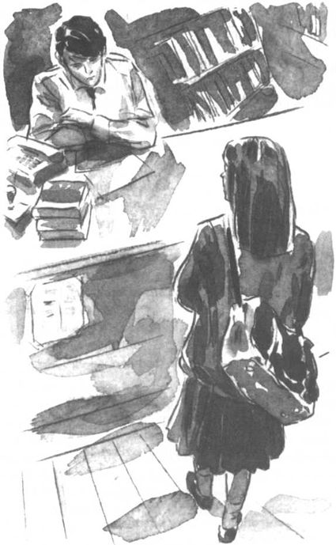

Listen to Part 1:
Tháng Hai trời rất xấu. Trời lạnh và mưa nhiều. Cứ mỗi ngày trong tuần, Tom lại ngồi tại bàn làm việc và nhìn ra bầu trời xám ngắt qua cửa sổ. Anh ta nhìn những cơn mưa rơi xuống những con phố và các tòa nhà xám xịt. Anh ta cố gắng quên đi tên thám tử đó. Cố gắng quên lời hứa anh ta đã đưa ra.
Một buổi chiều, Shana bước vào thư viện và đứng trước bàn làm việc của Tom. Quần áo của cô bé ướt sũng vì mưa. Tom thấy thương cho cô bé.
“Shana, sao cháu lại ở đây?” Anh ta hỏi. “Sao cháu không đi học?”
Shana chỉ vào chiếc đồng hồ trên tường. “Bốn giờ ba mươi rồi”, cô bé nói. “Chúng cháu đã tan học cả ngày rồi.”
“Ồ, đúng rồi”, Tom nói. “Chú không để ý là đã muộn thế rồi. Cháu muốn gì?”
“Rita sắp lấy Spooner rồi”, Shana nói.
“Chú biết”, Tom nói.
“Chú phải ngăn chị ấy lại, chú Tom ạ”, Shana nói. “Vẫn chưa muộn đâu. Chú hãy đi nói chuyện với chị ấy đi.”
“Không”, Tom nói. “Chú có một ý hay hơn.”
“Ý gì ạ?”, Shana hỏi.
Listen to Part 2:
“Chú không thể nói cho cháu biết được”, Tom nói. “Đó là bí mật.”
Tom cố gắng không nhìn Shana. Cô bé rất giống chị gái mình.
“Chị em yêu chú, chú Tom ạ”, Shana nói.
“Shana, cháu còn quá nhỏ để hiểu về tình yêu”, Tom nhanh chóng nói. “Về nhà làm bài tập đi nào. Cháu phải học hành chăm chỉ. Đừng để trượt kỳ thi như chú đã từng.”

“Chị em yêu chú, chú Tom ạ”, Shana nói.
Tom nhìn theo Shana đi ra khỏi thư viện và hòa vào màn mưa. Anh ta thấy rất bối rối. Nhưng đã quá muộn rồi. Anh ta đã lên kế hoạch.
Đêm trước ngày cưới, Tom không ngủ được. Anh ta nghĩ về ngày anh ta và Rita cùng nhau đến công viên. Anh ta nhớ lại buổi chiều họ nói chuyện cười đùa bên nhau. Họ đã có những phút giây vô cùng hạnh phúc.